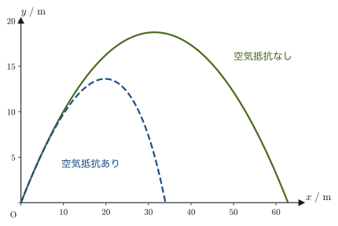
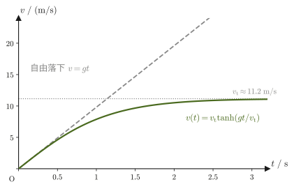

第5章放物運動と円運動 — 空気抵抗と向心加速度
ボールを斜め上に投げると放物線を描いて落ちてくる．この「放物運動」は，高校物理で水平方向・鉛直方向に分けて $x=v_0t\cos\theta$，$y=v_0t\sin\theta-\frac12gt^2$ という公式として学んだはずである．前章までで，力学の基本法則（ニュートンの運動方程式）と，曲線を描く運動を成分ごとに記述する方法を学んだので，この章ではいよいよ，その公式そのものを運動方程式 $m\bm{a}=\bm{F}$ から導く．
じつは高校の公式は，空気抵抗を完全に無視した理想的な場合の答えにすぎない．現実には，ボールにも雨粒にも空気抵抗（抗力）がはたらいており，その大きさは物体の速さによって決まる．この章では，速度に比例する空気抵抗がある場合の運動方程式を，はじめて本格的な微分方程式として解き，「投げてから十分時間が経つと，物体は一定の速さ（終端速度）で落ち続ける」という現象を数式で確かめる．さらに，速度の2乗に比例する抵抗（高速で動く物体の現実に近いモデル）の終端速度も求める．
最後に，高校物理で公式として暗記した等速円運動の向心加速度 $v^2/r=r\omega^2$ も，位置ベクトルを2回微分するだけで導けることを見る．
- 空気抵抗のない放物運動の運動方程式 $m\bm{a}=[0,-mg]$ を2回積分し，速度・位置の式，最高点の高さ，水平到達距離 $R=v_0^2\sin2\theta/g$ を導く
- 速度に比例する空気抵抗があるときの運動方程式を，成分ごとの1階線形微分方程式として変数分離法で解き（AD 02 第33章），速度・位置の式と終端速度の概念を得る
- 発展として，高速で運動する物体にはたらく，速度の2乗に比例する空気抵抗の運動方程式を解き，終端速度を求める
- 等速円運動の位置ベクトル $\bm{r}(t)=[r\cos\omega t,\,r\sin\omega t]$ を2回微分して向心加速度 $\bm{a}=-\omega^2\bm{r}$ を導き，その大きさが高校物理の公式 $v^2/r=r\omega^2$ に一致することを確かめる．向心力と，見かけの力である遠心力の違いを理解する
もとにしたノート：望月泰英『物理学ノート 力学』 pp. 13–15．
5.1 空気抵抗のない放物運動 — 軌道・最高点・水平到達距離
質量 $m\ [\mathrm{kg}]$ のボール（大きさを無視できる質点として扱う）を，水平から角度 $\theta$ だけ傾けた向きに，速さ $v_0\ [\mathrm{m/s}]$ で投げ出す場合を考える（図5.1）．座標系を，投げ出す点を原点，水平方向を $x$ 軸，鉛直上向きを $y$ 軸にとる．初速度ベクトルを成分で書くと，
$$ \bm{v}(0)=[\,v_0\cos\theta,\ v_0\sin\theta\,] $$である（$\bm{v}=[v_x,v_y]$ は $x$ 成分と $y$ 成分を並べて書く記法で，第1章で導入した太字のベクトル表記である）．位置ベクトルも第1章と同じく $\bm{r}(t)=[x(t),y(t)]$ と書き，速度は $\bm{v}=\dot{\bm{r}}$，加速度は $\bm{a}=\dot{\bm{v}}=\ddot{\bm{r}}$ である．空気抵抗を無視すると，ボールにはたらく力は重力 $-mg\,\bm{e}_y$（$\bm{e}_y$ は $y$ 方向の単位ベクトル，$g\ [\mathrm{m/s^2}]$ は重力加速度）だけなので，運動方程式 $m\bm{a}=\bm{F}$（第2章）は成分ごとに
\begin{equation} m\bm{a}=[\,0,\ -mg\,] \label{eq:5-proj-eom} \end{equation}と書ける．両辺を $m$ で割ると，加速度は
\begin{equation} \bm{a}=[\,0,\ -g\,] \label{eq:5-proj-a} \end{equation}という，時間 $t$ によらない定ベクトルになる．これは，高校物理で「水平方向は力がはたらかないので等速直線運動，鉛直方向は重力加速度 $g$ の等加速度運動」と習った内容そのものであり，$x$ 成分の加速度が恒等的に0，$y$ 成分の加速度が恒等的に $-g$ であることを式 \eqref{eq:5-proj-a} が表している．
導出：放物運動の速度と位置
加速度 $\bm{a}(t)=[0,-g]$（式 \eqref{eq:5-proj-a}）は速度の時間微分 $\dot{\bm{v}}=\bm{a}$ の右辺なので，両辺を時間で不定積分すると速度が求まる：
\begin{equation} \bm{v}(t)=\int\bm{a}\,\dd t=[\,C_1,\ -gt+C_2\,] \label{eq:5-proj-v-int} \end{equation}（$x$ 成分は $\int 0\,\dd t=C_1$，$y$ 成分は $\int(-g)\,\dd t=-gt+C_2$．$C_1,C_2$ は積分定数で，1回積分するごとに1つずつ現れる．）積分定数は初期条件から決める．時刻 $t=0$ での速度は投げ出したときの初速度そのものだから，$\bm{v}(0)=[v_0\cos\theta,\,v_0\sin\theta]$ である．式 \eqref{eq:5-proj-v-int} に $t=0$ を代入すると $\bm{v}(0)=[C_1,\,C_2]$ となるので，これと比較して
$$ C_1=v_0\cos\theta,\qquad C_2=v_0\sin\theta $$が定まる．したがって，速度は時刻 $t$ の関数として
\begin{equation} \bm{v}(t)=[\,v_0\cos\theta,\ -gt+v_0\sin\theta\,] \label{eq:5-proj-v} \end{equation}と書ける．次に，位置ベクトル $\bm{r}(t)$ は速度の時間積分 $\dot{\bm{r}}=\bm{v}$ から求まる．式 \eqref{eq:5-proj-v} をもう一度 $t$ で積分すると，
\begin{equation} \bm{r}(t)=\int\bm{v}\,\dd t=\Big[\,v_0t\cos\theta+C_3,\ -\frac12gt^2+v_0t\sin\theta+C_4\,\Big] \label{eq:5-proj-x-int} \end{equation}となる（$x$ 成分は $\int v_0\cos\theta\,\dd t=v_0t\cos\theta+C_3$，$y$ 成分は $\int(-gt+v_0\sin\theta)\,\dd t=-\frac12gt^2+v_0t\sin\theta+C_4$．積分定数はここでも新たに $C_3,C_4$ とおく——式 \eqref{eq:5-proj-v-int} の $C_1,C_2$ とは無関係な，別の定数である）．原点を投げ出す位置に選んだので，初期条件は $\bm{r}(0)=[0,0]$ である．式 \eqref{eq:5-proj-x-int} に $t=0$ を代入すると $\bm{r}(0)=[C_3,C_4]$ となるので，
$$ C_3=0,\qquad C_4=0 $$が定まる．よって，位置は
\begin{equation} \bm{r}(t)=\Big[\,v_0t\cos\theta,\ -\frac12gt^2+v_0t\sin\theta\,\Big] \label{eq:5-proj-x} \end{equation}（導出終わり）
公式5.1 空気抵抗のない放物運動の軌道
初速さ $v_0$，水平からの角 $\theta$ で投げ出した質点（空気抵抗なし，鉛直上向きを $y$ 軸正）の，時刻 $t$ での速度と位置は，
\begin{equation} \bm{v}(t)=[\,v_0\cos\theta,\ v_0\sin\theta-gt\,],\qquad \bm{r}(t)=\Big[\,v_0t\cos\theta,\ v_0t\sin\theta-\frac12gt^2\,\Big] \end{equation}である．これは高校物理で暗記した「水平方向は等速 $v_0\cos\theta$，鉛直方向は初速 $v_0\sin\theta$ の等加速度運動（加速度 $-g$）」の公式と完全に一致する——ここでは，それを運動方程式から実際に導いたことになる．
式 \eqref{eq:5-proj-x} から時間 $t$ を消去して，軌道を $y=y(x)$ の形（時間によらない曲線の式）で表してみよう．$x$ 成分 $x=v_0t\cos\theta$ を $t$ について解くと $t=x/(v_0\cos\theta)$ であり，これを $y$ 成分 $y=v_0t\sin\theta-\frac12gt^2$ に代入すると，
\begin{equation} y=v_0\sin\theta\cdot\frac{x}{v_0\cos\theta}-\frac12g\left(\frac{x}{v_0\cos\theta}\right)^2 =x\tan\theta-\frac{g}{2v_0^2\cos^2\theta}\,x^2 \label{eq:5-proj-orbit} \end{equation}となる（$\sin\theta/\cos\theta=\tan\theta$ を使った）．これは $x$ の2次関数——放物線（parabola）——である．これが「放物運動」という名前の由来である．
導出：最高点の高さと水平到達距離
最高点は，ボールが上昇から下降に転じる瞬間，すなわち鉛直方向の速度がちょうど0になる時刻である．式 \eqref{eq:5-proj-v} の $y$ 成分 $v_y(t)=v_0\sin\theta-gt$ を0とおくと，最高点に達する時刻 $t_{\text{top}}$ が求まる：
$$ v_0\sin\theta-gt_{\text{top}}=0 \qquad\therefore\ t_{\text{top}}=\frac{v_0\sin\theta}{g} $$これを式 \eqref{eq:5-proj-x} の $y$ 成分に代入すると，最高点の高さ $H$ が得られる：
$$ H=v_0t_{\text{top}}\sin\theta-\frac12g\,t_{\text{top}}^2 =v_0\sin\theta\cdot\frac{v_0\sin\theta}{g}-\frac12g\left(\frac{v_0\sin\theta}{g}\right)^2 =\frac{v_0^2\sin^2\theta}{g}-\frac{v_0^2\sin^2\theta}{2g} $$ \begin{equation} \therefore\ H=\frac{v_0^2\sin^2\theta}{2g} \label{eq:5-proj-H} \end{equation}次に，水平到達距離 $R$（出発点と同じ高さ $y=0$ に戻ってくるまでの水平距離）を求める．式 \eqref{eq:5-proj-x} の $y$ 成分を0とおくと，
$$ v_0t\sin\theta-\frac12gt^2=0 \qquad\therefore\ t\left(v_0\sin\theta-\frac12gt\right)=0 $$この2次方程式の解は $t=0$（出発の瞬間）と $t=\dfrac{2v_0\sin\theta}{g}$（着地の瞬間）の2つである．着地時刻 $t_{\text{land}}=2v_0\sin\theta/g=2t_{\text{top}}$（最高点に達する時刻のちょうど2倍——上りと下りが対称であることを表す）を，式 \eqref{eq:5-proj-x} の $x$ 成分に代入すると，
$$ R=v_0t_{\text{land}}\cos\theta=v_0\cos\theta\cdot\frac{2v_0\sin\theta}{g}=\frac{2v_0^2\sin\theta\cos\theta}{g} $$ここで，三角関数の倍角公式 $2\sin\theta\cos\theta=\sin2\theta$（高校数学 第5章 5.3 の2倍角の公式 $\sin2\theta=2\sin\theta\cos\theta$．加法定理 $\sin(\theta+\theta)=\sin\theta\cos\theta+\cos\theta\sin\theta$ から直接出る）を使うと，
\begin{equation} R=\frac{v_0^2\sin2\theta}{g} \label{eq:5-proj-R} \end{equation}という，高校物理でおなじみの水平到達距離の公式が得られる．$\sin2\theta$ は $\theta=45^\circ$ のとき最大値1をとるので，同じ初速さ $v_0$ で最も遠くまで飛ばすには，投射角を $45^\circ$ にすればよいことも式 \eqref{eq:5-proj-R} から読み取れる．さらに，$\sin(180^\circ-2\theta)=\sin2\theta$ なので，$\theta$ と $90^\circ-\theta$ では $R$ が等しい（例えば $30^\circ$ と $60^\circ$ は同じ距離に着地する．例題5.1(3)）．
（導出終わり）
例題5.1 最高点の高さと水平到達距離
初速度 $v_0=20\ \mathrm{m/s}$，仰角 $\theta=30^\circ$ でボールを投げた．空気抵抗を無視できるとして，(1) 最高点の高さ $H$ と (2) 水平到達距離 $R$ を求めよ．(3) 仰角を $60^\circ$ にしたときの $R$ と $H$ はどうなるか（$g=9.8\ \mathrm{m/s^2}$）．
解答 (1) 式 \eqref{eq:5-proj-H} に $v_0=20\ \mathrm{m/s}$，$\sin30^\circ=0.5$ を代入すると，
$$ H=\frac{v_0^2\sin^2\theta}{2g}=\frac{20^2\times0.5^2}{2\times9.8}=\frac{400\times0.25}{19.6}=\frac{100}{19.6}\approx5.10\ \mathrm{m} $$(2) 式 \eqref{eq:5-proj-R} に $\sin60^\circ\approx0.8660$（$2\theta=60^\circ$）を代入すると，
$$ R=\frac{v_0^2\sin2\theta}{g}=\frac{20^2\times0.8660}{9.8}=\frac{400\times0.8660}{9.8}\approx\frac{346.4}{9.8}\approx35.3\ \mathrm{m} $$（$[\mathrm{m/s}]^2/[\mathrm{m/s^2}]=\mathrm{m}$ なので，$H,R$ の単位はどちらも正しく $\mathrm{m}$ になっている．）(3) $\theta=60^\circ$ のとき $2\theta=120^\circ$ で，$\sin120^\circ=\sin60^\circ\approx0.8660$ だから，
$$ R=\frac{20^2\times0.8660}{9.8}\approx35.3\ \mathrm{m} $$となり，$30^\circ$ のときと同じ距離に着地する．一方，最高点の高さは $\sin60^\circ=0.8660$ より $\sin^2\theta=0.75$ なので，
$$ H=\frac{20^2\times0.75}{2\times9.8}=\frac{300}{19.6}\approx15.3\ \mathrm{m} $$と $30^\circ$ のときの3倍（$\sin^2 60^\circ/\sin^2 30^\circ=0.75/0.25=3$）になる．高く上げるほど滞空時間 $2v_0\sin\theta/g$ も長くなる（$30^\circ$ で約 $2.0\ \mathrm s$，$60^\circ$ で約 $3.5\ \mathrm s$）ので，遠くまで飛ぶ距離は同じになるが，着地までの時間は大きく違う．
5.2 空気抵抗のある放物運動 — 速度に比例する抵抗と終端速度
現実には，空気中を運動するボールには必ず空気抵抗（抗力，drag force）がはたらく．空気抵抗があるということは，重力のほかにもう一つ，ボールに力がはたらいていると考えるということである．小さい物体がゆっくり動く場合（速さが小さく，空気の流れが乱れない範囲）には，空気抵抗の大きさは物体の速さに比例することが実験的・理論的に知られている（半径 $a\ [\mathrm m]$ の球が粘性率 $\eta\ [\mathrm{Pa\cdot s}]$ の流体中を動くときの比例定数は $B=6\pi\eta a$ と書ける．これをストークスの抵抗法則と呼ぶ）．そこで，ボール（質点）の質量を $m\ [\mathrm{kg}]$，加速度を $\bm{a}$，初速度を $\bm{v}(0)=[v_{0x},v_{0y}]$（5.1節の記号では $v_{0x}=v_0\cos\theta$，$v_{0y}=v_0\sin\theta$），空気抵抗の比例定数を空気摩擦係数 $B\ [\mathrm{N\cdot s/m}]$ とする．
注意：速度に比例する抵抗は，小さくてゆっくり動く物体のモデル
速さに比例する抵抗がよく当てはまるのは，霧粒・油滴・粘い液体中の小球のように，小さくてゆっくり動く物体である．野球ボールやスカイダイバーのように大きくて速い物体の抵抗は，むしろ5.3節で扱う速さの2乗に比例する抵抗に近い．ここでは，解析的に（式だけで）解ける最も簡単なモデルとして比例抵抗を扱う．図5.4 の $b=0.3\ \mathrm{s^{-1}}$ や例題5.2 の $b=0.5\ \mathrm{s^{-1}}$ は，抵抗の効果が見やすいように選んだ値であり，実際のボールの値ではない．
比例抵抗が現実に当てはまる例として，半径 $a=10\ \mu\mathrm m$ の霧粒（水滴）を考える．空気の粘性率を $\eta=1.8\times10^{-5}\ \mathrm{Pa\cdot s}$ とすると $B=6\pi\eta a\approx3.4\times10^{-9}\ \mathrm{N\cdot s/m}$，質量は $m=\frac43\pi a^3\times10^3\ \mathrm{kg/m^3}\approx4.2\times10^{-12}\ \mathrm{kg}$ なので，$b=B/m\approx8\times10^{2}\ \mathrm{s^{-1}}$，終端速度（後述）は $g/b\approx1.2\ \mathrm{cm/s}$ となる（空気の浮力は小さいので無視した）．霧粒がゆっくり漂うように沈むという事実と合っている．
注意：抵抗力の向きと符号
抵抗力は，常に運動を妨げる向き，すなわち速度 $\bm{v}$ と逆向きにはたらく．ベクトルで書けば $\bm{F}_{\text{抵抗}}=-B\bm{v}$（大きさ $B\abs{\bm{v}}$，向きは $\bm{v}$ と逆）である．成分ごとに見ると，$x$ 方向の速度が $v_x$ のとき，抵抗力の $x$ 成分は大きさ $B|v_x|$ で向きは $v_x$ と逆——これを符号込みでまとめて書くと，$v_x$ の正負によらず常に $-Bv_x$ と書ける（$v_x\gt0$ のとき $-Bv_x\lt0$ で負の向き，$v_x\lt0$ のとき $-Bv_x\gt0$ で正の向き，どちらも「速度と逆向き」になっている）．$y$ 方向も同様に $-Bv_y$ である（図5.3）．
ボールにはたらく力は，重力 $[0,-mg]$ と，速度に比例する抵抗力 $[-Bv_x,-Bv_y]$ の和である．したがって運動方程式 $m\bm{a}=\bm{F}$ は，成分ごとに
\begin{equation} m\bm{a}=[\,-Bv_x,\ -mg-Bv_y\,] \label{eq:5-drag-eom} \end{equation}となる．ここで，両辺を $m$ で割り，$\dfrac{B}{m}=b\ [\mathrm{1/s}]$（次元は $\mathrm{(N\cdot s/m)/kg}=\mathrm{(kg\,m/s^2\cdot s/m)/kg}=\mathrm{1/s}$）とおくと，加速度は速度の時間微分でもあるから，
\begin{equation} \bm{a}=[\,-bv_x,\ -g-bv_y\,]=\Big[\,\diff{v_x}{t},\ \diff{v_y}{t}\,\Big] \label{eq:5-drag-a} \end{equation}と書ける．式 \eqref{eq:5-proj-a}（空気抵抗のない場合）と違って，式 \eqref{eq:5-drag-a} の右辺には未知関数 $v_x,v_y$ 自身が含まれている——つまりこれは，単純な積分ではなく，未知関数とその導関数の関係式，微分方程式（differential equation）になっている．$x$ 成分と $y$ 成分は互いに独立な式（$x$ 成分の式に $v_y$ は現れず，$y$ 成分の式に $v_x$ は現れない）なので，2つを別々に解けばよい．
数学の道具：変数分離形の1階線形微分方程式
式 \eqref{eq:5-drag-a} の2つの式は，どちらも未知関数（$v_x$ または $v_y$）とその1階微分だけを含む，1階線形微分方程式（大学数学 第33章 33.3，定数変化法による一般論）の特別な場合である．とくに，右辺が未知関数だけの式（$t$ を陽に含まない）の場合，変数分離形（大学数学 第33章 33.2）として，未知関数を含む項を左辺，$t$ を含む項を右辺にすべて集め，両辺を積分するという手順で直接解ける．以下の導出で使うのはこの変数分離の方法である．
導出：$x$ 方向の速度 $v_x(t)$
式 \eqref{eq:5-drag-a} の $x$ 成分は，
$$ \diff{v_x}{t}=-bv_x $$である．右辺に $t$ が陽に現れておらず，未知関数 $v_x$ だけの式なので，変数分離形として解ける．両辺に $\dd t$ をかけ，$v_x$ を含む項をすべて左辺に，定数 $b$ を含む項を右辺に移すと，
$$ \frac{1}{v_x}\dd v_x=-b\,\dd t $$となる．左辺は $v_x$ だけの式，右辺は定数だけの式になっているので，両辺をそれぞれ独立に積分してよい：
$$ \int\frac{1}{v_x}\,\dd v_x=\int(-b)\,\dd t $$左辺は $\dd(\ln|v_x|)/\dd v_x=1/v_x$ の逆演算なので $\ln|v_x|$（積分定数を含める），右辺は $-bt$（積分定数を含める）になる．2つの積分定数をまとめて1つにすると，
$$ \ln|v_x|=-bt+\text{const.} $$両辺を $e$ のべきにとる（$e^{\ln|v_x|}=|v_x|$）と，$v_x=\pm e^{\text{const.}}e^{-bt}$ となるが，$\pm e^{\text{const.}}$ は単に「0でない任意の定数」を表しているので，これを改めて $C_1$ とおけば，
\begin{equation} v_x=C_1e^{-bt} \label{eq:5-drag-vx-gen} \end{equation}が一般解である（$1/v_x$ を作るときに $v_x\ne0$ を仮定したが，$v_x\equiv0$ も方程式の解であり，$C_1=0$ の場合として含まれる．$C_1$ は0も含めた任意定数である）．
（導出終わり）
導出：$y$ 方向の速度 $v_y(t)$
式 \eqref{eq:5-drag-a} の $y$ 成分は，
$$ \diff{v_y}{t}=-bv_y-g $$である．右辺を $-b$ でくくると $-bv_y-g=-b\big(v_y+\dfrac{g}{b}\big)$ と書けるので，
$$ \diff{v_y}{t}=-b\Big(v_y+\frac{g}{b}\Big) $$となり，これは $v_x$ のときと同じ形（右辺が未知関数の1次式で $t$ を陽に含まない）の変数分離形である．$v_y+g/b$ を1つのかたまりとみて分離すると，
$$ \frac{1}{v_y+\dfrac{g}{b}}\,\dd v_y=-b\,\dd t $$両辺を積分すると（左辺は $u=v_y+g/b$ と置き換えれば $\int\frac{1}{u}\dd u=\ln|u|$ と同じ形），
$$ \int\frac{1}{v_y+\dfrac{g}{b}}\,\dd v_y=\int(-b)\,\dd t \qquad\therefore\ \ln\Big|v_y+\frac{g}{b}\Big|=-bt+\text{const.} $$両辺を $e$ のべきにとり，任意定数をまとめて $C_2$ とおくと，
\begin{equation} v_y=C_2e^{-bt}-\frac{g}{b} \label{eq:5-drag-vy-gen} \end{equation}が一般解である．$C_2=0$ の場合の $v_y\equiv-g/b$（一定）も解で，重力と抵抗がつり合って加速度が0になっている場合にあたる．
（導出終わり）
式 \eqref{eq:5-drag-vx-gen}，\eqref{eq:5-drag-vy-gen} をまとめると $\bm{v}(t)=\big[\,C_1e^{-bt},\ C_2e^{-bt}-\dfrac{g}{b}\,\big]$ となる．積分定数 $C_1,C_2$ は，初速度 $\bm{v}(0)=[v_{0x},v_{0y}]$（時刻 $t=0$ での速度）から決める．式に $t=0$ を代入すると $\bm{v}(0)=[C_1,\,C_2-g/b]$ となるので，これと比較して，
$$ C_1=v_{0x},\qquad C_2=v_{0y}+\frac{g}{b} $$が定まる．したがって，速度は時刻 $t$ の関数として，
\begin{equation} \bm{v}(t)=\Big[\,v_{0x}e^{-bt},\ \Big(v_{0y}+\frac{g}{b}\Big)e^{-bt}-\frac{g}{b}\,\Big] \label{eq:5-drag-v} \end{equation}と書ける．
イメージ：なぜ一定の速度に近づくのか
式 \eqref{eq:5-drag-v} で $t\to\infty$ の極限をとると，指数関数 $e^{-bt}$ は（$b\gt0$ なので）0に近づく．したがって $v_x\to0$，$v_y\to-g/b$（一定値）となる——ボールは時間がたつにつれて水平方向の速度を失い，鉛直方向には一定の速さ $g/b$ で落下し続けるようになる．これは，重力 $mg$（下向き）と空気抵抗 $B|v_y|$（上向き，速度と逆向き）の大きさがちょうどつり合う速さに落ち着くと考えれば理解できる：$mg=B|v_y|$ を $|v_y|$ について解くと $|v_y|=mg/B=g/b$ となり，式 \eqref{eq:5-drag-v} の極限と一致する．
定義5.1 終端速度
速度に比例する空気抵抗（抵抗係数 $b=B/m$）のもとで落下する物体が，時間がたつにつれて近づいていく一定の速さ
\begin{equation} v_{\text{t}}=\frac{g}{b}=\frac{mg}{B} \label{eq:5-drag-terminal} \end{equation}を終端速度（terminal velocity）という．重力と空気抵抗の大きさがつり合う速さであり，このとき合力（したがって加速度）は0になる．雨粒が地上に届くまでに際限なく加速し続けるのではなく，ほぼ一定の速さで降ってくるのは，この終端速度に達するからである．
速度の式 \eqref{eq:5-drag-v} が求まったので，位置 $\bm{r}(t)=\displaystyle\int\bm{v}\,\dd t$ を計算する．
導出：位置 $\bm{r}(t)$
式 \eqref{eq:5-drag-v} を成分ごとに積分する．$x$ 成分は，
$$ x(t)=\int v_{0x}e^{-bt}\,\dd t=-\frac{v_{0x}}{b}e^{-bt}+C_3 $$（$\int e^{-bt}\,\dd t=-\frac1b e^{-bt}+\text{const.}$——微分すると $\dd/\dd t\,(-\frac1be^{-bt})=-\frac1b\cdot(-b)e^{-bt}=e^{-bt}$ となり，もとの被積分関数に戻ることで確かめられる）．初期条件 $x(0)=0$ を使うと，$-\dfrac{v_{0x}}{b}+C_3=0$ より $C_3=\dfrac{v_{0x}}{b}$ となるので，
\begin{equation} x(t)=\frac{v_{0x}}{b}\big(1-e^{-bt}\big) \label{eq:5-drag-x} \end{equation}$y$ 成分は，$v_y(t)=\Big(v_{0y}+\dfrac{g}{b}\Big)e^{-bt}-\dfrac{g}{b}$ を項別に積分する．第1項は $x$ 成分と同じ形（定数 $\times\,e^{-bt}$）なので，
$$ \int\Big(v_{0y}+\frac{g}{b}\Big)e^{-bt}\,\dd t=-\frac1b\Big(v_{0y}+\frac{g}{b}\Big)e^{-bt}+\text{const.} $$第2項は，$-g/b$ が（$t$ によらない）定数であることに注意する——$t$ で積分すると，係数はそのままで $t$ が1つ掛かる：
$$ \int\Big(-\frac{g}{b}\Big)\dd t=-\frac{g}{b}\,t+\text{const.} $$（定数を $t$ で積分すると $t$ に比例する項になる：$\int c\,\dd t=ct$．この $-\dfrac gb\,t$ の項は，上の「イメージ」で見たように，終端速度で一定の速さで落下し続けるので，位置が直線的に下がり続けることを表している．）2つの項を合わせて，積分定数をまとめて $C_4$ とおくと，
$$ y(t)=-\frac1b\Big(v_{0y}+\frac{g}{b}\Big)e^{-bt}-\frac{g}{b}\,t+C_4 $$初期条件 $y(0)=0$ より，$-\dfrac1b\Big(v_{0y}+\dfrac gb\Big)+C_4=0$ なので $C_4=\dfrac1b\Big(v_{0y}+\dfrac gb\Big)$ となる．したがって，
\begin{equation} y(t)=\frac1b\Big(v_{0y}+\frac{g}{b}\Big)\big(1-e^{-bt}\big)-\frac{g}{b}\,t \label{eq:5-drag-y} \end{equation}（導出終わり）
公式5.2 空気抵抗のある放物運動の速度と位置
速度に比例する空気抵抗（$b=B/m$）のもとでの放物運動の速度と位置は，
\begin{equation} \bm{v}(t)=\Big[\,v_{0x}e^{-bt},\ \Big(v_{0y}+\frac{g}{b}\Big)e^{-bt}-\frac{g}{b}\,\Big],\qquad \bm{r}(t)=\left[\,\frac{v_{0x}}{b}(1-e^{-bt}),\ \ \frac1b\Big(v_{0y}+\frac{g}{b}\Big)(1-e^{-bt})-\frac{g}{b}\,t\,\right] \label{eq:5-drag-thm} \end{equation}である（$t\to\infty$ で $v_x\to0,\ v_y\to-g/b$（終端速度）となり，位置の $y$ 成分は $-\dfrac gb\,t$ の項のために際限なく減少し続ける——空気抵抗があっても物体は必ず地面（または水面）に達する，という当然の事実と整合している）．

例題5.2 抵抗のもとでの落下と終端速度
質量 $m=0.10\ \mathrm{kg}$ のボールに，速度に比例する空気抵抗（空気摩擦係数 $B=0.050\ \mathrm{N\cdot s/m}$）がはたらく．このボールを，水平方向の初速度なしで（$v_{0x}=0$），鉛直下向きに初速度0で静かに落下させる．(1) $b=B/m$ と終端速度を求めよ．(2) 鉛直方向の速度 $v_y(t)$ を式で書き，$t=1.0,\ 3.0,\ 10\ \mathrm s$ での速さを求めよ．(3) 速さが終端速度の90 %に達するまでの時間を求めよ（$g=9.8\ \mathrm{m/s^2}$）．
解答 (1) 定義より
$$ b=\frac Bm=\frac{0.050\ \mathrm{N\cdot s/m}}{0.10\ \mathrm{kg}}=0.50\ \mathrm{s^{-1}} $$である（単位は $\mathrm{(N\cdot s/m)/kg}=\mathrm{(kg\,m/s^2\cdot s/m)/kg}=\mathrm{1/s}$ で正しい）．終端速度の大きさは式 \eqref{eq:5-drag-terminal} より
$$ v_{\text t}=\frac gb=\frac{9.8\ \mathrm{m/s^2}}{0.50\ \mathrm{s^{-1}}}=19.6\ \mathrm{m/s} $$（$\mathrm{(m/s^2)/(1/s)}=\mathrm{m/s}$ で単位も正しい）．向きは鉛直下向き（$y$ 成分は $-19.6\ \mathrm{m/s}$）である．質量は $b=B/m$ の形でだけ効くので，$B$ と $m$ の両方が2倍になっても $b$ も終端速度も変わらない．
(2) 「鉛直下向きに初速度0で落下させる」は，本文の座標系（$y$ 軸が鉛直上向き）では $v_{0y}=0$ にあたるので，式 \eqref{eq:5-drag-v} の $y$ 成分に $v_{0y}=0$ を入れると，
$$ v_y(t)=\frac gb\,e^{-bt}-\frac gb=-\frac gb\big(1-e^{-bt}\big)=-19.6\,\big(1-e^{-0.5t}\big)\ \mathrm{m/s} $$となる．速さは $\abs{v_y}=19.6\,(1-e^{-0.5t})$ であり，
$$ \begin{aligned} t=1.0\ \mathrm s&:\ e^{-0.5}=0.6065,\quad 19.6\times(1-0.6065)=19.6\times0.3935\approx7.7\ \mathrm{m/s}\\ t=3.0\ \mathrm s&:\ e^{-1.5}=0.2231,\quad 19.6\times0.7769\approx15.2\ \mathrm{m/s}\\ t=10\ \mathrm s&:\ e^{-5}=0.006738,\quad 19.6\times0.99326\approx19.5\ \mathrm{m/s} \end{aligned} $$である．速さは最初のうちは大きく増え，しだいに終端速度 $19.6\ \mathrm{m/s}$ に近づいていく．
(3) $\abs{v_y}=0.9\,v_{\text t}$ より $1-e^{-bt}=0.9$，すなわち $e^{-bt}=0.1$．両辺の自然対数をとると $-bt=\ln0.1=-\ln10$ なので，
$$ t=\frac{\ln10}{b}=\frac{2.3026}{0.50\ \mathrm{s^{-1}}}\approx4.6\ \mathrm s $$である（$1/b=2.0\ \mathrm s$ を時間の目安として，約 $2.3/b$ で終端速度の90 %に達する）．
例題5.3 抵抗のある放物運動の最高点と到達距離
図5.4 と同じ条件（$v_0=25\ \mathrm{m/s}$，$\theta=50^\circ$，抵抗があるときは $b=0.3\ \mathrm{s^{-1}}$）で，空気抵抗がない場合とある場合のそれぞれについて，最高点の高さ $H$ と，着地するまでの水平距離を求めよ（$g=9.8\ \mathrm{m/s^2}$）．
解答 初速度の成分は $v_{0x}=25\cos50^\circ=25\times0.6428\approx16.07\ \mathrm{m/s}$，$v_{0y}=25\sin50^\circ=25\times0.7660\approx19.15\ \mathrm{m/s}$ である．
抵抗なし：式 \eqref{eq:5-proj-H}，\eqref{eq:5-proj-R} より，
$$ H=\frac{v_{0y}^2}{2g}=\frac{19.15^2}{2\times9.8}=\frac{366.8}{19.6}\approx18.7\ \mathrm m,\qquad R=\frac{v_0^2\sin100^\circ}{g}=\frac{625\times0.9848}{9.8}\approx62.8\ \mathrm m $$抵抗あり：最高点は $v_y=0$ となる時刻 $t_{\text{top}}$ である．式 \eqref{eq:5-drag-v} の $y$ 成分 $\big(v_{0y}+\frac gb\big)e^{-bt}-\frac gb=0$ を解くと，
$$ e^{-bt_{\text{top}}}=\frac{g/b}{v_{0y}+g/b}=\frac{1}{1+bv_{0y}/g} \qquad\therefore\ t_{\text{top}}=\frac1b\ln\Big(1+\frac{bv_{0y}}{g}\Big) $$数値を入れると，$bv_{0y}/g=0.3\times19.15/9.8\approx0.5863$ なので $t_{\text{top}}=\dfrac{\ln1.5863}{0.3}\approx\dfrac{0.4614}{0.3}\approx1.54\ \mathrm s$（抵抗なしのときの $v_{0y}/g\approx1.95\ \mathrm s$ より短い）．このとき $e^{-bt_{\text{top}}}=1/1.5863\approx0.6304$，$g/b\approx32.67\ \mathrm{m/s}$ を式 \eqref{eq:5-drag-y} に入れると，
$$ H=\frac1b\Big(v_{0y}+\frac gb\Big)\big(1-e^{-bt_{\text{top}}}\big)-\frac gb\,t_{\text{top}} =\frac{19.15+32.67}{0.3}\times0.3696-32.67\times1.538\approx63.8-50.2\approx13.6\ \mathrm m $$着地の時刻は $y(t)=0$，すなわち $\dfrac1b\big(v_{0y}+\dfrac gb\big)\big(1-e^{-bt}\big)=\dfrac gb\,t$ の解であるが，この式は $t$ が指数関数の中と外の両方に現れる超越方程式で，式変形だけでは解けない．そこで数値的に（二分法やニュートン法で）解くと $t_{\text{land}}\approx3.35\ \mathrm s$ となり，水平距離は式 \eqref{eq:5-drag-x} より
$$ x(t_{\text{land}})=\frac{v_{0x}}{b}\big(1-e^{-bt_{\text{land}}}\big)=\frac{16.07}{0.3}\times\big(1-e^{-1.006}\big)\approx53.6\times0.634\approx34\ \mathrm m $$である．まとめると，抵抗がなければ最高点 $18.7\ \mathrm m$，到達距離 $62.8\ \mathrm m$ のところ，抵抗があると最高点 $13.6\ \mathrm m$，到達距離 $34\ \mathrm m$ に減る（図5.4 の2本の曲線と一致する）．なお，どれだけ時間がたっても水平位置は $v_{0x}/b\approx53.6\ \mathrm m$ を超えない（演習5.5）．
例題5.4 軌道の非対称性
例題5.3 の結果を使って，抵抗がある場合の軌道の最高点が，出発点から着地点までの水平距離のどのあたりにあるかを調べ，抵抗がない場合と比べよ．また，この違いが生じる理由を，運動方程式・終端速度の考え方を使って説明せよ．
解答 最高点の水平位置は，式 \eqref{eq:5-drag-x} に $t_{\text{top}}\approx1.54\ \mathrm s$（$e^{-bt_{\text{top}}}\approx0.6304$）を入れて，
$$ x(t_{\text{top}})=\frac{v_{0x}}{b}\big(1-e^{-bt_{\text{top}}}\big)\approx53.6\times0.3696\approx19.8\ \mathrm m $$である．着地点は約 $34.0\ \mathrm m$ だったので，最高点は，出発点から着地点までの距離の $19.8/34.0\approx0.58$，すなわち約58 %の位置にある．抵抗がない場合は，上りと下りが対称で最高点は $R/2$（50 %）の位置にあるので，抵抗があると最高点は中央より着地点に近い側へずれる．上りの水平距離（約58 %）の方が下りの水平距離（約42 %）より長い，左右非対称な軌道になる．
理由：空気抵抗がない場合は，水平方向には力がはたらかないため $v_x=v_0\cos\theta$ が終始一定に保たれ，鉛直方向の運動は上りと下りで完全に対称（式 \eqref{eq:5-proj-v} で $t\to t_{\text{land}}-t$ と置き換えても速度の大きさが上りと下りで同じになる）である．一方，空気抵抗がある場合は，式 \eqref{eq:5-drag-v} の $v_x(t)=v_{0x}e^{-bt}$ が示すように，水平方向の速度は時間とともに指数関数的に減っていく——抵抗は常に運動を妨げる向きにはたらくので，上昇中も下降中も水平方向の速さは単調に減り続ける．したがって，同じ時間だけ進んでも，出発直後（上り）の方が後（下り）よりも水平方向に速く進むことになる．また，鉛直方向についても，落下中の速さは終端速度 $g/b$ に近づいて頭打ちになる（式 \eqref{eq:5-drag-terminal}）のに対し，上昇中は重力と抵抗の両方が下向き（運動を妨げる向き）にはたらくため，上昇の減速は自由落下より急激に進む．これらが合わさって，山頂を過ぎた後の下降がより急になる，図5.2・図5.4 に見られる非対称な軌道が生じる．
5.3 発展：速度の2乗に比例する抵抗と高速物体の終端速度
5.2節で扱った「速度に比例する抵抗」（$F_{\text{抵抗}}\propto v$）は，物体が小さい，あるいは速さがあまり大きくない場合（空気の流れが乱れずに物体のまわりを滑らかに流れる場合）によく当てはまる法則である．一方，スカイダイバーやゴルフボール，あるいは高速で走る自動車のように，物体が大きい，または速さが大きい場合には，物体の後ろに渦（乱流）ができて空気を巻き込みながら進むことになり，抵抗力は速さの2乗にほぼ比例するようになることが知られている．この節では，速さの2乗に比例する抵抗（ニュートンの抵抗法則と呼ばれることがある．ニュートン自身が『プリンキピア』で流体中を進む物体の抵抗を論じたことにちなむ呼び名である）のもとでの終端速度を求める．5.2節の考え方をそのまま応用できる，実用上とても重要な例である．
イメージ：なぜ抵抗は速さの2乗に比例するのか
断面積 $A\ [\mathrm{m^2}]$ の物体が速さ $v$ で空気（密度 $\rho_{\text{air}}$）の中を進むとする．短い時間 $\Delta t$ に物体が押しのける空気の質量は，物体の前に掃き出される体積 $Av\Delta t$ に密度をかけて $\rho_{\text{air}}Av\Delta t$ である（速く進むほど，同じ時間でより多くの空気を押しのける）．この空気は物体にはじき飛ばされて，ほぼ物体と同程度の速さ $v$ で動かされるので，空気に与える運動量は（質量）×（速さ）$=\rho_{\text{air}}Av\Delta t\cdot v$ である．力は運動量の時間変化率（$F=\Delta p/\Delta t$，第2章）なので，物体が空気に及ぼす力は $\rho_{\text{air}}Av^2$ の程度になり，ニュートンの第3法則（作用・反作用）より，物体が空気から受ける抵抗力も同じだけ，つまり速さの2乗に比例する．実際の係数は物体の形で決まるので，$\frac12C_{\mathrm d}\rho_{\text{air}}A$ の形にまとめて，抗力係数 $C_{\mathrm d}$（形で決まる無次元の数）に押しつける．どちらの法則（速度に比例か，速度の2乗に比例か）が実際に当てはまるかは，物体の大きさ・速さ・空気の粘性で決まる無次元の量（レイノルズ数）で判定されるが，その詳しい理論は流体力学の範囲になるので，本書では「低速では比例，高速では2乗に比例する」という事実だけを使う．
鉛直に落下する物体（質量 $m$，抵抗係数を $c\ [\mathrm{kg/m}]$ とする——$c$ は物体の形状や大きさ，空気の密度で決まる正の定数で，典型的には $c=\frac12 C_{\mathrm d}\rho_{\text{air}}A$（$C_{\mathrm d}$：抗力係数，$\rho_{\text{air}}$：空気の密度——第3章の曲率半径 $\rho$ と区別するため添字を付けた——，$A$：物体の進行方向から見た断面積）と表される）を考え，下向きを正とする速さ $v$（$v\ge0$ の間だけを考える）を使うと，運動方程式は，重力 $mg$（下向き，正）と抵抗力 $cv^2$（上向き，運動を妨げる向きなので負）の和として，
\begin{equation} m\diff{v}{t}=mg-cv^2 \label{eq:5-quad-eom} \end{equation}と書ける．
導出：速度の2乗に比例する抵抗のもとでの終端速度
終端速度は，加速度がちょうど0になる（速度が一定値に落ち着く）速さである．式 \eqref{eq:5-quad-eom} で $\dd v/\dd t=0$ とおくと，
$$ 0=mg-cv_{\text{t}}^2 \qquad\therefore\ v_{\text{t}}^2=\frac{mg}{c} $$$v_{\text{t}}\gt0$（下向きに落下する速さ）を選ぶと，
\begin{equation} v_{\text{t}}=\sqrt{\frac{mg}{c}} \label{eq:5-quad-terminal} \end{equation}が終端速度である．
（導出終わり）
公式5.3 速度の2乗に比例する抵抗のもとでの終端速度
質量 $m$ の物体が，抵抗係数 $c$（$F_{\text{抵抗}}=cv^2$）の速度の2乗に比例する空気抵抗を受けながら鉛直に落下するとき，終端速度は
\begin{equation} v_{\text{t}}=\sqrt{\frac{mg}{c}} \end{equation}である．5.2節の（速度に比例する抵抗の）終端速度 $v_{\text t}=mg/B$ が $m$ に比例するのに対し，こちらは $c$ が同じなら $v_{\text t}\propto\sqrt m$ となる．また，同じ形・同じ材質の物体を大きさ $L$ 倍にすると，質量は $L^3$ に，断面積 $A$（したがって $c$）は $L^2$ に比例して増えるので，$v_{\text t}\propto\sqrt{m/c}\propto\sqrt{L}$ である——大きいものほど速く落ちる．
導出（発展）：時刻 $t$ での速度 $v(t)$
式 \eqref{eq:5-quad-eom} を，終端速度 $v_{\text t}=\sqrt{mg/c}$（したがって $c=mg/v_{\text t}^2$）を使って書き直すと，
$$ \diff{v}{t}=g-\frac{c}{m}v^2=g\left(1-\frac{v^2}{v_{\text t}^2}\right) $$となる．これも右辺が未知関数 $v$ だけの式（$t$ を陽に含まない）なので，変数分離形（大学数学 第33章 33.2）として解ける．$v$ を含む項を左辺に集めると，
$$ \frac{\dd v}{1-v^2/v_{\text t}^2}=g\,\dd t \qquad\text{すなわち}\qquad \frac{v_{\text t}^2\,\dd v}{v_{\text t}^2-v^2}=g\,\dd t $$左辺の被積分関数を部分分数分解する．$v_{\text t}^2-v^2=(v_{\text t}-v)(v_{\text t}+v)$ なので，
$$ \frac{v_{\text t}^2}{v_{\text t}^2-v^2}=\frac{v_{\text t}}{2}\left(\frac{1}{v_{\text t}-v}+\frac{1}{v_{\text t}+v}\right) $$（右辺を通分すると $\dfrac{v_{\text t}}{2}\cdot\dfrac{(v_{\text t}+v)+(v_{\text t}-v)}{(v_{\text t}-v)(v_{\text t}+v)}=\dfrac{v_{\text t}}{2}\cdot\dfrac{2v_{\text t}}{v_{\text t}^2-v^2}=\dfrac{v_{\text t}^2}{v_{\text t}^2-v^2}$ となり，左辺と一致することが確かめられる）．したがって，
$$ \frac{v_{\text t}}{2}\int\left(\frac{1}{v_{\text t}-v}+\frac{1}{v_{\text t}+v}\right)\dd v=\int g\,\dd t $$左辺の1項目は $\dfrac{\dd}{\dd v}\big(-\ln|v_{\text t}-v|\big)=\dfrac{1}{v_{\text t}-v}$ より $-\ln|v_{\text t}-v|$，2項目は $\ln|v_{\text t}+v|$ になるので，
$$ \frac{v_{\text t}}{2}\Big(-\ln|v_{\text t}-v|+\ln|v_{\text t}+v|\Big)=gt+\text{const.} \qquad\therefore\ \frac{v_{\text t}}{2}\ln\left|\frac{v_{\text t}+v}{v_{\text t}-v}\right|=gt+\text{const.} $$初期条件を，時刻 $t=0$ に静かに落下を始める場合（$v(0)=0$）とすると，$t=0,\,v=0$ を代入して $\text{const.}=0$（$\ln1=0$ なので）．したがって，
$$ \ln\left(\frac{v_{\text t}+v}{v_{\text t}-v}\right)=\frac{2g}{v_{\text t}}\,t \qquad\therefore\ \frac{v_{\text t}+v}{v_{\text t}-v}=e^{2gt/v_{\text t}} $$（$0\le v\lt v_{\text t}$ の範囲では $v_{\text t}+v\gt0,\ v_{\text t}-v\gt0$ なので絶対値記号を外してよい）．これを $v$ について解くと，$v_{\text t}+v=(v_{\text t}-v)e^{2gt/v_{\text t}}$ より $v\big(1+e^{2gt/v_{\text t}}\big)=v_{\text t}\big(e^{2gt/v_{\text t}}-1\big)$ となるので，
$$ v(t)=v_{\text t}\cdot\frac{e^{2gt/v_{\text t}}-1}{e^{2gt/v_{\text t}}+1} $$ここで，双曲線正接関数（ハイパボリックタンジェント）$\tanh x=\dfrac{e^{2x}-1}{e^{2x}+1}$（大学数学 第2章 2.5で学んだ $\tanh x=(e^x-e^{-x})/(e^x+e^{-x})$ の分子・分母に $e^x$ を掛けた形に等しい）を使うと，
\begin{equation} v(t)=v_{\text t}\tanh\!\left(\frac{g}{v_{\text t}}\,t\right) \label{eq:5-quad-vt} \end{equation}と，きれいな形にまとまる．
（導出終わり）
イメージ：式 \eqref{eq:5-quad-vt} の極限での振る舞い
時刻 $t$ が小さいとき（$gt/v_{\text t}\ll1$），$\tanh x\approx x$（テイラー展開 $\tanh x=x-\dfrac{x^3}{3}+\cdots$ の1次の項だけを残した近似）なので，$v(t)\approx v_{\text t}\cdot\dfrac{g}{v_{\text t}}t=gt$ となり，抵抗がまだほとんど効かず自由落下に近い（$v=gt$ は高校物理の自由落下の公式そのもの）．一方，時刻 $t$ が大きいとき（$gt/v_{\text t}\gg1$），$\tanh x\to1$ なので $v(t)\to v_{\text t}$ となり，式 \eqref{eq:5-quad-terminal} の終端速度に一致する．つまり式 \eqref{eq:5-quad-vt} は，「最初は自由落下のように加速し，しだいに終端速度に頭打ちになる」という物理的な描像を，1つの式で正しく表している．
発展：一般の向きの2乗抵抗と，初速度が終端速度より大きい場合
この節では鉛直に落下する場合（$v\ge0$）だけを扱ったが，一般の運動でのベクトルの式は $\bm{F}_{\text{抵抗}}=-c\,\abs{\bm{v}}\,\bm{v}$ である（大きさ $c\abs{\bm v}^2$，向きは $\bm{v}$ と逆）．斜めに投げたボールでは $\abs{\bm{v}}=\sqrt{v_x^2+v_y^2}$ が $x$ 成分と $y$ 成分の両方の式に入るため，運動方程式は連立した非線形の微分方程式になり，一般には式だけでは解けず数値計算で解く．5.2節の比例抵抗のように閉じた式が書けるのは，成分が互いに独立になる特別な場合だからである．また，もし初速度が終端速度より大きい（$v(0)>v_{\text t}$）と，抵抗が重力より大きいので物体は減速し，上の解の $\tanh$ が $\coth$ に置き換わった $v(t)=v_{\text t}\coth\!\big(gt/v_{\text t}+\text{定数}\big)$ の形で，上から終端速度 $v_{\text t}$ に近づく．

例題5.5 高速で落下する物体の終端速度
質量 $m=2.0\ \mathrm{kg}$，進行方向から見た断面積 $A=0.25\ \mathrm{m^2}$ の物体が，抗力係数 $C_{\mathrm d}=1.05$（立方体が面を進行方向に向けて落下する場合の代表的な値）で空気中（密度 $\rho_{\text{air}}=1.2\ \mathrm{kg/m^3}$）を鉛直に落下する．(1) 抵抗係数 $c=\frac12C_{\mathrm d}\rho_{\text{air}}A$ と終端速度 $v_{\text t}$ を求めよ．(2) 静かに落下を始めてから，速さが終端速度の90 %に達するまでの時間を求めよ（$g=9.8\ \mathrm{m/s^2}$）．
解答 (1)
$$ c=\frac12C_{\mathrm d}\rho_{\text{air}}A=\frac12\times1.05\times1.2\ \mathrm{kg/m^3}\times0.25\ \mathrm{m^2}\approx0.1575\ \mathrm{kg/m} $$式 \eqref{eq:5-quad-terminal} より，
$$ v_{\text t}=\sqrt{\frac{mg}{c}}=\sqrt{\frac{2.0\times9.8}{0.1575}}=\sqrt{124.4}\approx11.2\ \mathrm{m/s} $$（$[\mathrm{kg}][\mathrm{m/s^2}]/[\mathrm{kg/m}]=\mathrm{m^2/s^2}$ の平方根で $\mathrm{m/s}$ となり，単位は正しい．）(2) 式 \eqref{eq:5-quad-vt} で $v=0.9\,v_{\text t}$ とおくと，$\tanh(gt/v_{\text t})=0.9$ なので，$\tanh$ の逆関数（大学数学 第2章 2.6 の逆双曲線関数 $\operatorname{artanh}$）を使って，
$$ \frac{g}{v_{\text t}}t=\operatorname{artanh}(0.9)\approx1.4722 \qquad\therefore\ t=\frac{v_{\text t}}{g}\times1.4722\approx\frac{11.2}{9.8}\times1.4722\approx1.68\ \mathrm{s} $$5.4 等速円運動と向心加速度
高校物理では，半径 $r$ の円周上を一定の速さ $v$ で回る「等速円運動」において，物体には円の中心を向く加速度（向心加速度）$a=v^2/r=r\omega^2$（$\omega$ は角速度）がはたらく，と公式として学んだはずである．この節では，位置ベクトルを時間で2回微分するだけで，この公式そのものを導く．
円の半径を $r\ [\mathrm m]$，角速度を $\omega$（一定）$[\mathrm{rad/s}]$ とする（ラジアンは「弧の長さ÷半径」で決まる無次元の量なので，単位の計算では $\mathrm{rad/s}$ を $\mathrm{s^{-1}}$ と同じに扱ってよい）．円の中心を原点にとると，時刻 $t$ での質点の位置ベクトル（中心からの位置ベクトル）は，5.1〜5.2節と同じ記号 $\bm{r}(t)$ を使って，
\begin{equation} \bm{r}(t)=[\,r\cos\omega t,\ r\sin\omega t\,] \label{eq:5-circ-r} \end{equation}と書ける（太字の $\bm{r}$ が位置ベクトル，細字の $r$ がその大きさである半径．$\omega t$ は，時刻 $t=0$ で基準線（$x$ 軸の正の向き）上にあった質点が，角速度 $\omega$ で一定の割合で掃いてきた角度を表し，$\omega\gt0$ のとき質点は反時計回りに回る．図5.6）．実際，式 \eqref{eq:5-circ-r} から $|\bm{r}(t)|^2=r^2\cos^2\omega t+r^2\sin^2\omega t=r^2(\cos^2\omega t+\sin^2\omega t)=r^2$（一定）となり，質点が原点から常に距離 $r$ の円周上にあることが確かめられる．
導出：速度と向心加速度
式 \eqref{eq:5-circ-r} を時刻 $t$ で微分すると，速度が得られる（$r,\omega$ は定数なので，微分するのは $\cos\omega t,\sin\omega t$ の部分だけであり，合成関数の微分 $\dfrac{\dd}{\dd t}\cos\omega t=-\omega\sin\omega t$，$\dfrac{\dd}{\dd t}\sin\omega t=\omega\cos\omega t$ を使う）：
$$ \dot{\bm{r}}(t)=\diff{}{t}\bm{r}(t)=[\,-r\omega\sin\omega t,\ r\omega\cos\omega t\,] =r\omega\,[\,-\sin\omega t,\ \cos\omega t\,] $$（$\dot{\bm{r}}$（アール・ドット）は $\bm{r}$ の時間微分 $\dd\bm{r}/\dd t$ を表す，第1章で導入した記法である．）これが速度 $\bm{v}(t)=\dot{\bm{r}}(t)$ である．その大きさは，$[-\sin\omega t,\cos\omega t]$ が単位ベクトル（大きさ $\sqrt{\sin^2\omega t+\cos^2\omega t}=1$）であることから，
\begin{equation} |\bm{v}(t)|=r\omega\quad(\text{一定}) \label{eq:5-circ-speed} \end{equation}となり，速さが時刻によらず一定であること（これが「等速」円運動と呼ばれるゆえんである）が確かめられる．さらにもう一度時刻 $t$ で微分すると，加速度が得られる：
$$ \ddot{\bm{r}}(t)=\diff{}{t}\dot{\bm{r}}(t)=-r\omega^2\,[\,\cos\omega t,\ \sin\omega t\,] $$（$\ddot{\bm{r}}$（アール・ツードット）は2階の時間微分 $\dd^2\bm{r}/\dd t^2$．右辺の $[\cos\omega t,\sin\omega t]$ は式 \eqref{eq:5-circ-r} の $\bm{r}(t)/r$ そのものなので，）
\begin{equation} \bm{a}(t)=\ddot{\bm{r}}(t)=-\omega^2\,\bm{r}(t) \label{eq:5-circ-a} \end{equation}と，元の位置ベクトルを使って簡潔に書き直せる．次元の確認：$r\omega^2$ の単位は $\mathrm{m\cdot s^{-2}}=\mathrm{m/s^2}$ で，加速度の単位と一致する．
（導出終わり）
公式5.4 等速円運動の向心加速度
半径 $r$，角速度 $\omega$（一定）で円運動する質点の加速度は，
\begin{equation} \bm{a}(t)=-\omega^2\,\bm{r}(t) \label{eq:5-circ-a-thm} \end{equation}である．その大きさ $|\bm{a}|=\omega^2|\bm{r}(t)|=r\omega^2$ は時間によらず一定であり，向きは（時刻とともに変わるが）つねに $-\bm{r}(t)$ の向き，すなわち円の中心を向く．この加速度を向心加速度（centripetal acceleration）という．
公式5.5 向心加速度の大きさ（高校物理の公式）
式 \eqref{eq:5-circ-speed} より速さ $v=|\bm{v}|=r\omega$ なので，$\omega=v/r$ を式 \eqref{eq:5-circ-a-thm} の大きさ $|\bm{a}|=r\omega^2$ に代入すると，
\begin{equation} |\bm{a}|=r\omega^2=r\left(\frac{v}{r}\right)^2=\frac{v^2}{r} \qquad\text{すなわち}\qquad |\bm{a}|=\frac{v^2}{r}=r\omega^2 \label{eq:5-circ-avr} \end{equation}となる．これが，高校物理で公式として学んだ向心加速度の大きさの式である．どちらの表式（$v^2/r$ か $r\omega^2$ か）を使うかは，与えられている量（速さ $v$ か角速度 $\omega$ か）に応じて選べばよい．
イメージ：速さ一定なのに，なぜ加速度は0でないのか
「加速度」と聞くと「速さが変化すること」を思い浮かべがちだが，加速度は速度ベクトルの時間変化率であり，速度は大きさ（速さ）だけでなく向きも持つベクトルである．等速円運動では速さ $|\bm{v}|=r\omega$ は一定でも，運動の向き（速度ベクトルの向き）は絶えず変わり続けている．式 \eqref{eq:5-circ-a} が示す加速度は，まさにこの「向きの変化」を表しており，大きさが変わらなくても向きが変わっていれば加速度は0にならない．実際，式 \eqref{eq:5-circ-a} の $\bm{a}(t)=-\omega^2\bm{r}(t)$ は位置ベクトル $\bm{r}(t)$ と常に平行（逆向き）——すなわち速度ベクトル $\bm{v}(t)$（位置ベクトルの接線方向，図5.7）とは常に垂直——になっている．これは，第3章で学んだ，速さが一定の運動では接線方向の加速度成分が0で，法線方向の加速度成分 $v^2/\rho$（$\rho$ は曲率半径）だけが残る，という結果とも一致する（円運動では曲率半径 $\rho$ は円の半径 $r$ そのものなので，法線方向の加速度は $v^2/r$——式 \eqref{eq:5-circ-avr} と同じ式になる．演習5.3で詳しく確かめる）．
定義5.2 向心力
質量 $m$ の質点が半径 $r$，角速度 $\omega$ の等速円運動をするには，運動方程式 $m\ddot{\bm{r}}=\bm{F}$（第2章）と式 \eqref{eq:5-circ-a-thm} より，質点に
\begin{equation} \bm{F}(t)=m\bm{a}(t)=-m\omega^2\,\bm{r}(t) \label{eq:5-circ-F} \end{equation}の力がはたらいていなければならない（同じことを $m\omega^2\bm{r}=-\bm{F}$ と書いてもよい）．この力は $\bm{r}$ と反対の向き，すなわち円の中心を向いている．円運動を維持するために必要な，この中心を向く力を向心力（centripetal force）という．大きさは $|\bm{F}|=m r\omega^2=mv^2/r$ である．
イメージ：向心力と遠心力
式 \eqref{eq:5-circ-F} の向心力 $\bm{F}=-m\omega^2\bm{r}$ は，円運動している物体自身にはたらく，中心向きの実在の力（例えば糸につながれた石がぐるぐる回るときの糸の張力，人工衛星にはたらく地球の重力など）である．
一方，「遠心力」という言葉もよく耳にする．円運動している物体と一緒に回転している観測者（非慣性系にいる観測者）から見ると，物体はその観測者に対して静止しているので，合力は0のはずである．実在の力である向心力 $\bm{F}=-m\omega^2\bm{r}$ とつり合うためには，大きさが等しく逆向きの力 $-\bm{F}=+m\omega^2\bm{r}=m\dfrac{v^2}{r}\bm{e}_r$（外向き）が必要になる．これが遠心力（centrifugal force）であり，回転する観測者が運動方程式をそのまま使えるようにするために導入する，見かけの力（慣性力）である．外から静止して見ている観測者には，遠心力という実在の力は存在しない．
遠心力は，向心力の「反作用」ではないことに注意しよう．作用・反作用の法則（第3法則）の相手は別の物体にはたらく力である．例えば糸につながれた石では，糸が石を引く力（向心力）の反作用は，石が糸を引く力（糸にはたらく）であって，石にはたらく遠心力とは別物である．一般の回転座標系での運動の記述（遠心力やコリオリ力の導出）は，第9章 9.3で改めて扱う．
円運動は，第6章で学ぶ極座標を使うと1行で書ける．極座標 $(r,\theta)$ では，円運動は $r=$ 一定，$\theta=\omega t$ という運動で，位置ベクトルは $\bm{r}=r\bm{e}_r$，加速度は $\bm{a}=-r\omega^2\bm{e}_r$ と表される（第6章 6.2）．本節の式 \eqref{eq:5-circ-a-thm} は，これを直交座標の成分で書いたものにあたる．
例題5.6 向心力の大きさ
半径 $r=2.0\ \mathrm m$，角速度 $\omega=3.0\ \mathrm{rad/s}$ で等速円運動する質量 $m=0.50\ \mathrm{kg}$ の質点にはたらく向心力の大きさを求めよ．
解答 式 \eqref{eq:5-circ-avr} より，向心加速度の大きさは（$\mathrm{rad}$ は無次元なので単位の計算では省く），
$$ |\bm{a}|=r\omega^2=2.0\ \mathrm{m}\times(3.0\ \mathrm{s^{-1}})^2=2.0\times9.0=18\ \mathrm{m/s^2} $$式 \eqref{eq:5-circ-F} より，向心力の大きさは，
$$ |\bm{F}|=m|\bm{a}|=0.50\ \mathrm{kg}\times18\ \mathrm{m/s^2}=9.0\ \mathrm{N} $$である．速さは $v=r\omega=2.0\times3.0=6.0\ \mathrm{m/s}$ であり，$v^2/r=6.0^2/2.0=36/2.0=18\ \mathrm{m/s^2}$ と，$r\omega^2$ の計算と一致することも確認できる（式 \eqref{eq:5-circ-avr}）．
例題5.7 位置ベクトルの数値微分による検証
例題5.6と同じ $r=2.0\ \mathrm m$，$\omega=3.0\ \mathrm{rad/s}$ の等速円運動について，式 \eqref{eq:5-circ-r} の位置ベクトル $\bm{r}(t)$ を，解析的に微分するのではなく，時刻 $t=1.0\ \mathrm s$ の前後で数値的に（差分を使って）2回微分し，式 \eqref{eq:5-circ-a-thm} の結果 $\bm{a}=-\omega^2\bm{r}$ とどの程度一致するか確かめよ．
解答 まず，2階微分を差分で近似する式（中心差分）を作る．微小な時間刻み $\Delta t$ に対し，$\bm{r}(t\pm\Delta t)$ を $t$ のまわりでテイラー展開する（大学数学 第4章 4.2）と，
$$ \bm{r}(t\pm\Delta t)=\bm{r}(t)\pm\Delta t\,\dot{\bm{r}}(t)+\frac{(\Delta t)^2}{2}\ddot{\bm{r}}(t)\pm\frac{(\Delta t)^3}{6}\dddot{\bm{r}}(t)+\cdots $$である．$+$ と $-$ の2式を足すと，$\Delta t$ の奇数次の項は打ち消し合って $\bm{r}(t+\Delta t)+\bm{r}(t-\Delta t)=2\bm{r}(t)+(\Delta t)^2\ddot{\bm{r}}(t)+\cdots$ となるから，$2\bm{r}(t)$ を移項して $(\Delta t)^2$ で割ると，
$$ \ddot{\bm{r}}(t)\approx\frac{\bm{r}(t+\Delta t)-2\bm{r}(t)+\bm{r}(t-\Delta t)}{(\Delta t)^2} $$が得られる．$\Delta t=10^{-3}\ \mathrm s$，$t=1.0\ \mathrm s$ として，$\bm{r}(t)=[\,2.0\cos3.0t,\ 2.0\sin3.0t\,]$ の各成分を計算する（$3.0\times1.001=3.003$，$3.0\times0.999=2.997$）：
$$ \begin{array}{c|ccc} & t=0.999\ \mathrm s\ (\text{角}\ 2.997) & t=1.000\ \mathrm s\ (\text{角}\ 3.000) & t=1.001\ \mathrm s\ (\text{角}\ 3.003)\\\hline x=2.0\cos(\text{角}) & -1.979129364 & -1.979984993 & -1.980822802\\ y=2.0\sin(\text{角}) & 0.288178692 & 0.282240016 & 0.276298800 \end{array} $$$x$ 成分の分子は $(-1.980822802)-2\times(-1.979984993)+(-1.979129364)=1.782\times10^{-5}$，$y$ 成分の分子は $0.276298800-2\times0.282240016+0.288178692=-2.54\times10^{-6}$ なので，$(\Delta t)^2=10^{-6}\ \mathrm{s^2}$ で割ると，
$$ \ddot{\bm{r}}(1.0)\approx[\,17.82,\ -2.540\,]\ \mathrm{m/s^2} $$となる．引き算で有効数字が大きく減る（$2$ 程度の数どうしの差が $10^{-5}$ 程度）ので，桁落ちを避けるために各値を9桁ほど残して計算した．一方，解析的な結果は，$\cos3.0\approx-0.98999$，$\sin3.0\approx0.14112$ を使うと，
$$ \bm{a}(1.0)=-\omega^2\bm{r}(1.0)=-9.0\times[\,2.0\cos3.0,\ 2.0\sin3.0\,]\approx-9.0\times[\,-1.97999,\ 0.28224\,]\approx[\,17.820,\ -2.540\,]\ \mathrm{m/s^2} $$となり，数値微分の結果と有効数字4桁まで一致する（$\Delta t$ を小さくしすぎると桁落ちが逆に効いてくるので，$10^{-3}\ \mathrm s$ 程度が適当である）．このように，解析的な微分の結果は，数値的に差分をとった結果とよく一致することが確認できる．なお，同じ計算を Python などで行うと，より細かい桁まで再現できる．
5.5 まとめと演習
5.5.1 まとめ
- 空気抵抗のない放物運動は，運動方程式 $m\bm{a}=[0,-mg]$ を2回積分するだけで解け，速度・位置は $\bm{v}(t)=[v_0\cos\theta,\,v_0\sin\theta-gt]$，$\bm{r}(t)=[v_0t\cos\theta,\,v_0t\sin\theta-\frac12gt^2]$（公式5.1）．最高点の高さ $H=v_0^2\sin^2\theta/(2g)$，水平到達距離 $R=v_0^2\sin2\theta/g$（$\theta=45^\circ$ で最大）．
- 速度に比例する空気抵抗（$b=B/m$）があるときの運動方程式は，成分ごとに変数分離形の1階線形微分方程式になり，速度・位置は式 \eqref{eq:5-drag-thm}（公式5.2）．$t\to\infty$ で水平方向の速度は0，鉛直方向の速度は終端速度 $v_{\text t}=g/b=mg/B$（定義5.1）に近づく．位置の積分では，定数項を積分すると $t$ に比例する項が生じることに注意する必要がある．なお，この比例抵抗は小さくてゆっくり動く物体のモデルで，ボールのような大きく速い物体には2乗抵抗のほうが現実に近い．
- 発展として，高速な物体にはたらく速度の2乗に比例する抵抗（$F=cv^2$）のもとでの終端速度は $v_{\text t}=\sqrt{mg/c}$（公式5.3）．時刻 $t$ での速度は $v(t)=v_{\text t}\tanh(gt/v_{\text t})$（式 \eqref{eq:5-quad-vt}）で，最初は自由落下に近く，しだいに終端速度に頭打ちになる．
- 等速円運動の位置ベクトル $\bm{r}(t)=[r\cos\omega t,\,r\sin\omega t]$ を2回微分すると，向心加速度 $\bm{a}=-\omega^2\bm{r}(t)$（公式5.4）が得られる．その大きさは $|\bm{a}|=r\omega^2=v^2/r$（公式5.5，高校物理の公式）で，向きは常に円の中心を向く（大きさは一定だが，向きは時刻とともに変わる）．円運動を維持する中心向きの力 $\bm{F}=-m\omega^2\bm{r}$ を向心力（定義5.2）という．回転する観測者から見ると，向心力とつり合うように外向きの見かけの力（慣性力）が現れ，これを遠心力という．遠心力は作用・反作用の関係にある反作用力ではない．
5.5.2 演習問題
演習5.1 射程の対称性と最高点に達する時刻・高さ
(1) 空気抵抗を無視した放物運動で，同じ初速さ $v_0$ で投射角 $\theta$ と $90^\circ-\theta$ の場合の水平到達距離 $R$ は等しいことを，式 \eqref{eq:5-proj-R} を使って示せ．(2) 初速度 $v_0=15\ \mathrm{m/s}$，仰角 $\theta=45^\circ$ で投げたボールが最高点に達する時刻と，そのときの高さを求めよ（$g=9.8\ \mathrm{m/s^2}$）．
ヒント：(1) $\sin2(90^\circ-\theta)=\sin(180^\circ-2\theta)$ を簡単にする．(2) 5.1節の導出（式 \eqref{eq:5-proj-H} の直前）で使った，$v_y(t)=0$ とおく方法をそのまま数値に当てはめればよい．
演習5.2 終端速度の物理的意味
式 \eqref{eq:5-drag-v} の $y$ 成分 $v_y(t)=\Big(v_{0y}+\dfrac gb\Big)e^{-bt}-\dfrac gb$ について，$t\to\infty$ の極限を求めよ．この極限が，初速度 $v_{0y}$ の値（大きい・小さい・正・負のどれであっても）によらないことを指摘し，その物理的な意味を説明せよ．
ヒント：$e^{-bt}$ の項がどうなるかに注目する．物理的な意味は，5.2節の「イメージ：なぜ一定の速度に近づくのか」で述べた，重力と空気抵抗のつり合いの考え方を使うとよい．
演習5.3 向心加速度 $v^2/r=r\omega^2$ の2通りの確認
等速円運動における向心加速度の大きさが $v^2/r=r\omega^2$ と書けることを，(1) 本章5.4節の結果（位置ベクトルの2階微分）と，(2) 第3章の接線・法線成分への分解（速さ一定の運動では法線方向の加速度が $v^2/\rho$，$\rho$ は曲率半径）で円の曲率半径が $\rho=r$ であることを使う方法，の2通りで確認せよ．
ヒント：(1) は式 \eqref{eq:5-circ-avr} の導出をなぞればよい．(2) は，円運動では進行方向（接線方向）の速さの変化率がゼロであること（$\dot v=0$，等速だから）と，円の曲率半径が半径 $r$ に等しいことを使う．
演習5.4 人工衛星の軌道速度
(1) 質量 $m$ の人工衛星が，地球（質量 $M$，万有引力定数 $G$）のまわりを，地球の中心から半径 $r$ の円軌道で等速円運動するとき，軌道を保つのに必要な向心力を万有引力の法則から求め，軌道速度 $v$ を $G,M,r$ を用いて表せ．(2) $G=6.674\,30\times10^{-11}\ \mathrm{N\,m^2/kg^2}$，$M=5.972\times10^{24}\ \mathrm{kg}$，地表すれすれの軌道 $r=6.371\times10^{6}\ \mathrm m$ として，$v$ と周期 $T=2\pi r/v$ を求めよ．
ヒント：向心力の大きさ（式 \eqref{eq:5-circ-F} の大きさ，$mv^2/r$ の形に書き直したもの）と，万有引力の大きさ $GMm/r^2$ が等しいとおいて $v$ について解く．
演習5.5 空気抵抗のある放物運動の水平位置の極限
式 \eqref{eq:5-drag-x}（速度に比例する抵抗のもとでの水平位置 $x(t)$）について，$t\to\infty$ の極限を求めよ．この極限が有限の値に収束することの物理的な意味を，終端速度の考え方を使って説明せよ．
ヒント：式 \eqref{eq:5-drag-x} には $t$ に比例する項が含まれていない（$y$ 成分の式 \eqref{eq:5-drag-y} とは対照的である）ことに注目する．水平方向の速度 $v_x(t)$ が $t\to\infty$ でどうなるかを思い出すとよい．
演習5.6 断面積と終端速度
例題5.5と同じ物体（$m=2.0\ \mathrm{kg}$，$C_{\mathrm d}=1.05$，$\rho_{\text{air}}=1.2\ \mathrm{kg/m^3}$）が，パラシュートを開いて断面積が $A=0.50\ \mathrm{m^2}$（例題5.5の2倍）になったとき（簡単のため $C_{\mathrm d}$ は変わらないとする），新しい終端速度を求めよ．断面積が2倍になると，終端速度はもとの何倍になるか．
ヒント：公式5.3（式 \eqref{eq:5-quad-terminal}）に，$c=\frac12C_{\mathrm d}\rho_{\text{air}}A$ を新しい $A$ で計算し直して代入する．$A$ と $v_{\text t}$ の関係（$v_{\text t}\propto1/\sqrt A$）に注目すると，倍率を計算だけで求めることもできる．
演習5.7 抵抗のある運動の位置と速度
速度に比例する空気抵抗（$b=0.50\ \mathrm{s^{-1}}$）のもとで，初速度 $\bm{v}(0)=[12,\ 16]\ \mathrm{m/s}$（$x$ 軸は水平，$y$ 軸は鉛直上向き）で投げたボールの，投げてから $t=1.0\ \mathrm s$ 後の位置 $[x,y]$ と速度 $[v_x,v_y]$ を求めよ．空気抵抗がない場合の同じ時刻の位置と比べよ（$g=9.8\ \mathrm{m/s^2}$）．
ヒント：公式5.2（式 \eqref{eq:5-drag-thm}）に数値を代入する．$g/b=19.6\ \mathrm{m/s}$，$e^{-0.5}\approx0.6065$ を使う．
5.5.3 参考文献
- 望月泰英『物理学ノート 力学』（手書き講義ノート）．本章の底本（pp. 13–15）．
- J. B. Marion and S. T. Thornton, Classical Dynamics of Particles and Systems, 5th ed., Brooks/Cole, 2004．
- D. Kleppner and R. J. Kolenkow, An Introduction to Mechanics, 2nd ed., Cambridge University Press, 2014．
- R. D. Knight, Physics for Scientists and Engineers: A Strategic Approach, 4th ed., Pearson, 2016．（抗力・終端速度について）